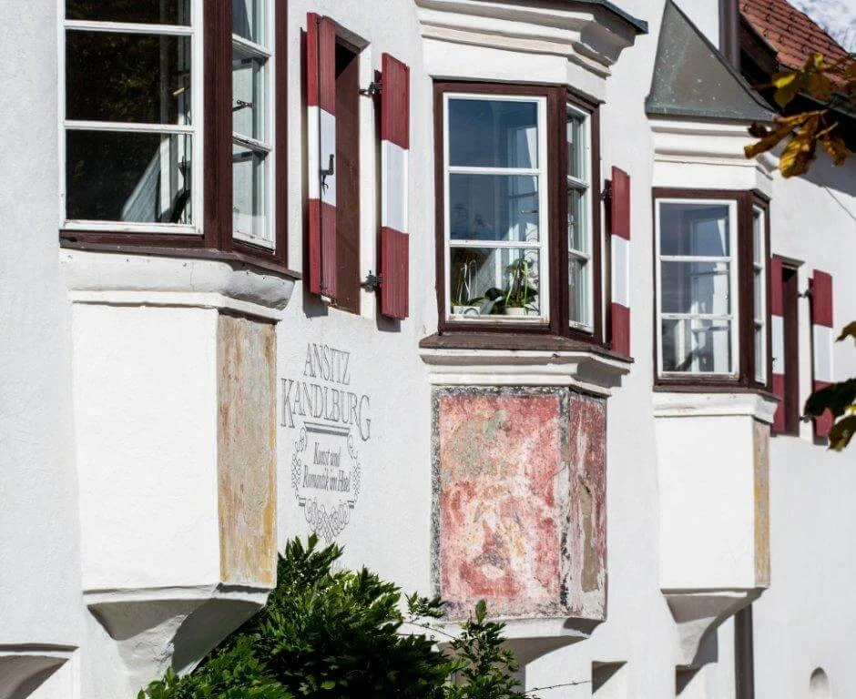

UNA DIMORA STORICA IN ALTO ADIGE
Ansitz Kandelburg
Arte, romanticismo.
Il tuo tempo, altrove.
ALTO ADIGE

DETTAGLI CHE CUSTODISCONO IL TEMPOBENVENUTI AD ANSITZ KANDELBURG
Ci sono luoghi
che si visitano.
Altri si sentono.
Nel cuore di Rio di Pusteria, una dimora dove ogni dettaglio ha qualcosa da raccontare. Gli affreschi, i salotti, il legno antico: qui la storia fa parte dell’ospitalità.
Menzionata per la prima volta nel 1284, Kandelburg conserva il carattere delle residenze nobiliari e lo accosta al piacere di un soggiorno raccolto, tutto da vivere al proprio ritmo.
Trova il tuo angolo di quieteLE CAMERE DELLA DIMORA
Il carattere di ieri.
Il tuo spazio, oggi.
A Kandelburg, ogni camera ha una propria identità. L’architettura, i colori e gli arredi cambiano da un ambiente all’altro, seguendo il carattere della dimora e la sua storia.
Le stanze portano una dedica alle figure che hanno abitato queste mura. Baldacchini, testiere lavorate e piccoli salotti raccontano un’ospitalità dal gusto classico, dove il fascino del passato incontra il comfort del soggiorno.
Un viaggio in coppia, una pausa tra le montagne o un’occasione speciale: raccontaci come immagini i tuoi giorni in Alto Adige. Ti aiuteremo a conoscere le camere e a scegliere il soggiorno più adatto a te.
INSIEME, CON UN’ALTRA ATMOSFERA
I momenti belli
meritano un
luogo speciale.
Le volte in pietra, il calore del legno, il piacere di stare a tavola. Le cantine della dimora custodiscono un’atmosfera che rende unici incontri e occasioni da ricordare.
Immagina la tua occasione CONVIVIALITÀ · INCONTRI · TRADIZIONERIO DI PUSTERIA · ALTO ADIGE
Fuori, le montagne.
Dentro, la tua quiete.
Le vie del paese, i sentieri, i colori delle stagioni. Da Rio di Pusteria l’Alto Adige si lascia scoprire, una giornata alla volta.
Respira la montagna.
Sentieri, paesaggi aperti e il piacere di fermarsi. Il lato più verde dell’Alto Adige, al tuo ritmo.
Vivi questa stagioneCONTATTI · ANSITZ KANDELBURG
Restiamo in contatto.
- Indirizzo
- Richtergasse 4 · 39037 Rio di Pusteria (BZ)
Alto Adige, Italia - Partita IVA
- 02732060211
NEL CUORE DI RIO DI PUSTERIA
Ci trovi qui.
Richtergasse 4 · La mappa interattiva richiede una connessione internet.
UN FILO DIRETTO CON LA DIMORA